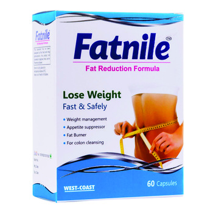
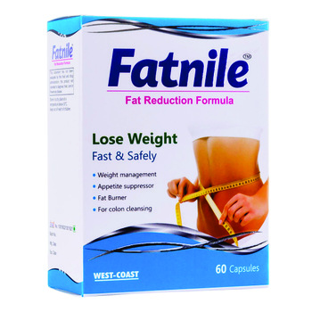

Top 10 Weight Loss Products On Amazon (Of ALL TIME)! | Sober Alley | Fasting + Fitness For Women
2020.12.07 12:17
Home Intermittent Fasting Weight Loss Weight Loss Tips Motivation Fitness Workouts Yoga LATEST POSTS 40 Motivational Quotes For Weight Loss & Exercise 37 Best Weight Loss Affirmations (That Really Work)! The Best Low-Calorie Salad Dressing Recipe For Weight... Dirty Fasting vs. Clean Fasting For Weight Loss... Zero Calorie Foods: Eat All You Want And... Home Intermittent Fasting Weight Loss Weight Loss Tips Motivation Fitness Workouts Yoga Home » Top 10 Weight Loss Products On Amazon (Of ALL TIME)! Weight Loss Tips Weight Loss Tips & Motivation
Top 10 Weight Loss Products On Amazon (Of ALL TIME)!
by Allie McCormick August 30, 2020 written by Allie McCormick August 30, 20202019 Best Weight Loss Products
Though I’m still on my weight loss journey and have about another 30 pounds to lose, I am 30 pounds below my max weight of nearly 200 pounds. No, that doesn’t make me a weight loss expert, but I do feel like I know at least a little about what is truly helpful and what is not. Especially for those of us who have problems committing long-term to workout plans, diets, and lifestyle changes.
I’m not saying I think losing weight the lazy way is good.
Believe me, I’ve tried SO HARD over the years to eat super clean, workout hard all the time, and be perfect. For a while, it works. But I always unravel. It’s frustrating.
Does that sound familiar to you? Have you experienced something similar?
Through all my ups and downs, however, these top weight loss products have stood the test of time.
I use them regularly and highly recommend each of them to anyone who struggles with eating organic, vegan whole foods, drinking only water and unsweetened coffee and tea, and exercising 6 days a week, but still wants to make small, reasonable, sustainable changes to better their physical appearance.
Today I want to share my list of top 10 weight loss products that helped me lose over 30 pounds and keep it off.
*This post contains affiliate links
Miracle Noodle Zero Carb Pasta
First on the list of top 10 weight loss products on Amazon are Miracle Noodles Shirataki Noodles.
I first heard of shirataki noodles from my bestie many years ago. We are both always trying to lose weight with varying degrees of success.
She told me she found these zero-carb “pasta” noodles to replace regular pasta and was making spaghetti for dinner.
I thought she was nuts.
Her spaghetti looked appetizing though, and I had to admit, I was intrigued.
If you haven’t heard of shirataki noodles before, they are low-calorie, zero-carb, thin Japanese pasta-like noodles made from yams. They aren’t exactly like the pasta we’ve come to know and love, but in my opinion, they do the trick.
They come in different styles. You can get fettucini shirataki noodles , angel hair shirataki noodles , and even rice ! But my favorite is the fettucini style. The rice isn’t good at all – go right ahead and skip it.
I like to chop up some chicken breast then add broccoli, mushrooms and alfredo sauce. I wind up with a HUGE bowl of chicken fettuccini alfredo for like 120 calories. Full, happy, low-calorie and low-carb!
I eat these several times a month and credit them for helping me sustain my 30-pound weight loss.
Walden Farms Zero-Calorie Syrup
Second on my list of top 10 weight loss products on Amazon is this sugar-free, calorie-free maple pancake syrup by Walden Farms . If you’re against artificial sweeteners, this product isn’t for you. But if you’re okay with them and love sweet, syrupy pancakes but don’t want to pile on extra calories, give this a try!
The taste isn’t terribly distinguishable from other pancake syrups, and it really is zero calories!
Though eating pancakes regularly probably won’t exactly put you on the fast-track to weight loss, when you do eat them, might as well shave 150-200 calories off your meal’s total if you can, right?
Some stores do carry this, but not all. To save time it’s often easier to just order this type of thing online.
Sweet Sweat Waist Trainer
The third item on the list of top 10 weight loss products on Amazon is the S weet Sweat Waist Trainer . I love this product because I just feel great when wearing it to work out.
I don’t know that it actually helps melt fat… to me, that doesn’t even really make sense. But I wear it tightly around my midsection when I work out and I feel like it does a few things I like.
it stabilizes and supports my back a little it compresses my stomach and waist I end my training sessions dripping with sweat it slims me down and I look cuter in my workout clothesIt’s gotten to the point where if I forget to put it on, I feel less enthused about working out.
I just like it a lot and recommend it for the reasons above.
It’s a great, low price, and I’ve had it for about 2 years. It’s a sturdy product and very easy to clean, too!
RENPHO Bluetooth Body Fat Scale
Fourth on my list of top 10 weight loss products on Amazon is this lightweight Bluetooth body fat scale, by RENPHO .
I was on the search for a scale that was more useful than a standard scale, but the Fitbit Aria scale was just too pricey.
I did a little research and settled on this cheapy scale on Amazon and couldn’t be more pleased with the product!
It has a pretty cool app that you download onto your phone. It auto-syncs via Bluetooth as soon as you step on.
You can have up to 5 profiles (I think), so multiple family members can use the same scale.
Great Quality, Great Price
Let me tell you, for such a good price this scale is great quality!
It tracks weight, body fat percentage, hydration, BMI, muscle mass, bone density and metabolic age.
What I like most about this is even when the number on the scale goes up, I can see the bigger picture.
One of my pet peeves when entering online discussions of weight loss is “muscle weighs more than fat so when you’re gaining its probably muscle”. I HATE that. Do you know much weightlifting it takes to gain a pound of muscle? It’s usually water weight or something else. But it helps someone who obsesses over numbers, like me, to have multiple metrics to consider.
It’s a great scale. If you’re looking for a scale upgrade but want to save money, grab this one!
Bowflex SelectTech 552 Adjustable Dumbbells
Fifth on the list of top 10 weight loss products on Amazon are these epic adjustable Bowflex dumbbells . Seriously, these are the bee’s knees when it comes to weights!
So, let me tell you, I HATE lifting weights. Hate, hate, hate it.
It’s boring, it’s uncomfortable and I can’t zone out to music and run/step or whatever to the beat to take my mind off what I’m doing.
But what I hate more than weightlifting itself is having to drive to the gym and compete with others for weights and weight machines that I already hate in the first place!
It’s such a miserable waste of time.
I found a bunch of exercises I can do at home and decided to look into purchasing some dumbbells, so I could at least do it in the privacy and comfort of my living room.
Originally I was going to buy the standard kind because I didn’t know any better. Maybe a few sets at reasonable weights like 10lb – 15lb or something like that.
Then I considered the kind with the adjustable plates, to have more options.
Hubby mentioned the all-in-one weights and I had never heard of such a thing!
So, I googled and found this amazing set on Amazon .
They are a bit more expensive than other weights, which may be off-putting at first, but let me tell you these pay for themselves.
What I like most about them is they take up almost no space. You can go from 5lbs to 52lbs per dumbbell using one apparatus and it’s VERY easy to click your desired weight into place.
Do you find yourself paying monthly for a gym membership that you wind up being too busy to even visit? These have enabled both me and my husband to cancel our memberships! Thus, they’ve already paid for themselves many times over since we purchased them.
Look into it and see if it’s something that might help you save time and money too!
Ozeri Pronto Digital Food Scale
Item #6 on the list of top 10 weight loss products on Amazon is this nifty little food scale .
I know there are tons and tons of food scales out there but for me, this one does the trick. It’s cheap, light-weight and gets the job done.
I like it so much that I bought two… one for my kitchen and one for the office so I could weigh things while I was away.
Being totally honest, I don’t log all my food all the time the way I should. But doing it even some of the time opens up my eyes to just how much I’m really consuming.
When I’m working out regularly, eating fairly well and the weight isn’t coming off, it’s a quick reminder to go back to weighing all my food for at least a week or two, and I usually start to lose again.
No need to spend a ton of money on a food scale. This cheapy digital one works just fine.
TaoTronics Wireless Magnetic Earbuds
So, earbuds aren’t exactly a weight loss item. But I put them as number 7 on my list of top 10 weight loss products on Amazon because music is imperative to my weight loss success.
I’ll admit – I’m a cardio junkie. But that’s literally only because I listen to bass-heavy or fast music that gets me going, and I step or run to the beat.
For the longest, I was using the corded earbuds that came with my phone. They’re actually pretty good quality. But it got annoying when weights entered the picture, or when I’d be jump roping or something to have to deal with the cord.
I know the Beats brand is popular, but idk… I’m not spending all that money on a pair of earbuds. So, I found these on Amazon and decided to give them a go.
These are great because they charge up fast and the battery lasts a couple weeks before needing to be re-charged. The sound quality and volume are great, they fit comfortably in your ear, and they seamlessly sync right up via Bluetooth connection.
You really can’t beat these for the quality and price!
Spiral Slicer Spiralizer
Number 8 on the list of top 10 weight loss products on Amazon is this easy-to-use zucchini spiralizer .
Again, pasta lover here.
I just think veggie noodles are so pretty and healthy too!
They don’t quite replace pasta for me, as I’ve yet to successfully replicate any recipe I’ve found, but I do like them in salad recipes like this one .
I’ve tried other spiralizers before and some are clunky, hard to use, and hard to clean. This is none of those things.
This is cheap, super easy, lightweight, gets the job done and comes with a little cleaner brush that actually works!
The only downside is some of the vegetable is leftover because of the fit of the vegetable into the apparatus. But I just toss the rest in a salad or dump it into a smoothie. No big deal.
I LOVE this spiralizer!
CareTouch Skinfold Body Measuring Tape
The ninth item on my list of top 10 weight loss products on Amazon is this tape measurer .
I like to have multiple points of measurement to check my progress. I take pictures, use the advanced RENPHO scale , go by how clothes fit, how hot my hubby tells me I am, and also take measurements.
What I like about this affordable measuring tape is it has a little knob and holster. You wrap the tape around your body, place the knob into the holster, and “click” it into place. You get an effortless, accurate measurement in return.
Easy and effective!
Exercise Resistance Bands
Lastly, item #10 on the list of top 10 weight loss products on Amazon is these exercise bands .
Another vote for workouts you can do at home!
These bands come in 5 resistance levels, and they work perfectly. The product even comes with an instruction manual that has about 10 different exercises you can do with the bands. Let me tell you – it’s challenging!
I like these because they’re affordable, light-weight, effective and small for storage. I use them about once a week for a light workout while watching TV. Definitely feel the burn the next day!
Top Weight Loss Products On Amazon
I hope you enjoyed discovering the top 10 weight loss products on Amazon that I’ve used to lose 30 pounds.
I hope you enjoy them as much as I do, and they help you along your path to the body you crave and deserve!
Related Weight Loss Tips:
It’s Tea Time! 7 Best Detox Cleanse Tea Reviews 15 Lazy Girl Weight Loss Hacks To Slim Down Fast Zero Calorie Foods: Eat All You Want And Still Lose Weight? 5 Ways To Lose Weight Without Even Trying (Super Easy Tips)Top 10 Weight Loss Products On Amazon (Of ALL TIME)!
0 comment 0 Facebook Twitter PinterestAllie McCormick
I've lost over 50 pounds with intermittent fasting and share what I've learned to educate and inspire others to reach their weight loss goals too!
You may also like
40 Motivational Quotes For Weight Loss & Exercise
November 19, 202037 Best Weight Loss Affirmations (That Really Work)!
November 19, 2020Zero Calorie Foods: Eat All You Want And Still Lose...
November 21, 2020How To Stay Motivated On Your Weight Loss Journey
November 21, 2020Is The 1,200 Calorie Diet Right For You? (Lose Weight...
January 3, 2020Looking For Something?
Welcome
HI, I'M ALLIE!
I share my weight loss journey to motivate and inspire you to reach your health & fitness goals too! Learn all the ins and outs of intermittent fasting plus fun and easy workouts and diet tips to help you release those extra pounds once and for all!
Join Me On
Twitter PinterestCONNECT
Pinterest Twitter ContactAmazon Associates Disclosure
Sober Alley is a participant in the Amazon Services LLC Associates Program, an affiliate advertising program designed to provide a means for sites to earn advertising fees by advertising and linking to Amazon.com.
Legal
Terms of Use Privacy Policy Disclosure@2020 Sober Alley - All Rights Reserved.
Back To Top
- Weight Loss? Easy! The Best Supplements to Keep Fit ...
- 12 Popular Weight Loss Pills and Supplements Reviewed
- 13 best Patanjali Products for weight loss (With Price)
- Weight Loss: Buy Weight Loss Products Online At Best ...
- Amazon.com: Weight Loss: Health & Household: Supplements ...
- Shark Tank Weight Loss Products 2020: What's Real and What ...
- Top 10 Weight Loss Products On Amazon (Of ALL TIME ...
- Dietary supplements for weight loss - Mayo Clinic
- 11 Supplements and Herbs for Weight Loss Explained - WebMD
- 10 BEST Weight-Loss Products That Actually Work | TDE
- Weight Loss? Easy! The Best Supplements to Keep Fit ...
A safe and effective way to lose weight is always going to be in demand. This is a guide to the various weight loss products that have been featured on Shark Tank. As always, our goal is for you to make informed and safe choices when buying health products.
- 12 Popular Weight Loss Pills and Supplements Reviewed
TruVision Health Weight Loss: Order TruVision weight loss combo. TruVision Health trufix and trucontrol sample. Buy TruVision. Lose avg. 4-7 lbs in the 1st week. New Truvy products.
- 13 best Patanjali Products for weight loss (With Price)
2019 Best Weight Loss Products. Though I’m still on my weight loss journey and have about another 30 pounds to lose, I am 30 pounds below my max weight of nearly 200 pounds.No, that doesn’t make me a weight loss expert, but I do feel like I know at least a little about what is truly helpful and what is not.Especially for those of us who have problems committing long-term to workout plans ...
- Weight Loss: Buy Weight Loss Products Online At Best ...
Buy Weight Loss Supplements online at Chemist Warehouse and enjoy huge discounts across the entire range. Shop products online or in store today. Exclusive Offers And Big Savings Delivered to your inbox! sign up. Required field. Invalid email address. Please try again. There was an issue. Please reload the page try again.
- Amazon.com: Weight Loss: Health & Household: Supplements ...
The average weight loss in the supplement group was 4.2 pounds (1.9 kilograms). The average weight loss in the placebo group was 0.9 pounds (0.4 kilograms). While these results are intriguing, the fact that the trial was small and lasted only eight weeks means the results can't be reliably generalized to real-world situations.
- Shark Tank Weight Loss Products 2020: What's Real and What ...
The low levels of fat and carbohydrates in the best protein powders makes them one of the best weight loss products that actually work. Dog. Me and my girlfriend recently got a dog. What a great way to get your ass off the couch! Since I care a lot about our dog I feel that I have to get out on long walks, for the dog’s sake.
- Top 10 Weight Loss Products On Amazon (Of ALL TIME ...
There are many different weight loss solutions out there. This includes all sorts of pills, drugs and natural supplements. These are claimed to help you lose weight, or at least make it easier to ...
- Dietary supplements for weight loss - Mayo Clinic
The Best Trader Joe's Products For Weight Loss We know the popular supermarket chain avoids marketing their products, and that may be why countless hidden health gems secretly lurk on TJ's shelves.
- 11 Supplements and Herbs for Weight Loss Explained - WebMD
Since weight loss is a function of burning more calories than your body absorbs, a weight loss pill can tackle one or both of these potential avenues to generate weight loss. Weight loss pills are great for people on a diet, as they are a natural compliment to an exercise and diet-focused weight loss program .
- 10 BEST Weight-Loss Products That Actually Work | TDE
Shop Weight Management. Should you take a weight loss supplement every day? The best way to use weight loss supplements is to take them every day as directed for a short period of time (2-6 weeks). You should only need the extra support of these products when you are looking for that final boost for your fat loss diet.
A safe and effective way to lose weight is always going to be in demand. This is a guide to the various weight loss products that have been featured on Shark Tank. As always, our goal is for you to make informed and safe choices when buying health products.
TruVision Health Weight Loss: Order TruVision weight loss combo. TruVision Health trufix and trucontrol sample. Buy TruVision. Lose avg. 4-7 lbs in the 1st week. New Truvy products.
2019 Best Weight Loss Products. Though I’m still on my weight loss journey and have about another 30 pounds to lose, I am 30 pounds below my max weight of nearly 200 pounds.No, that doesn’t make me a weight loss expert, but I do feel like I know at least a little about what is truly helpful and what is not.Especially for those of us who have problems committing long-term to workout plans ...
Buy Weight Loss Supplements online at Chemist Warehouse and enjoy huge discounts across the entire range. Shop products online or in store today. Exclusive Offers And Big Savings Delivered to your inbox! sign up. Required field. Invalid email address. Please try again. There was an issue. Please reload the page try again.
The average weight loss in the supplement group was 4.2 pounds (1.9 kilograms). The average weight loss in the placebo group was 0.9 pounds (0.4 kilograms). While these results are intriguing, the fact that the trial was small and lasted only eight weeks means the results can't be reliably generalized to real-world situations.
The low levels of fat and carbohydrates in the best protein powders makes them one of the best weight loss products that actually work. Dog. Me and my girlfriend recently got a dog. What a great way to get your ass off the couch! Since I care a lot about our dog I feel that I have to get out on long walks, for the dog’s sake.
There are many different weight loss solutions out there. This includes all sorts of pills, drugs and natural supplements. These are claimed to help you lose weight, or at least make it easier to ...
The Best Trader Joe's Products For Weight Loss We know the popular supermarket chain avoids marketing their products, and that may be why countless hidden health gems secretly lurk on TJ's shelves.
Since weight loss is a function of burning more calories than your body absorbs, a weight loss pill can tackle one or both of these potential avenues to generate weight loss. Weight loss pills are great for people on a diet, as they are a natural compliment to an exercise and diet-focused weight loss program .
Shop Weight Management. Should you take a weight loss supplement every day? The best way to use weight loss supplements is to take them every day as directed for a short period of time (2-6 weeks). You should only need the extra support of these products when you are looking for that final boost for your fat loss diet.
 
